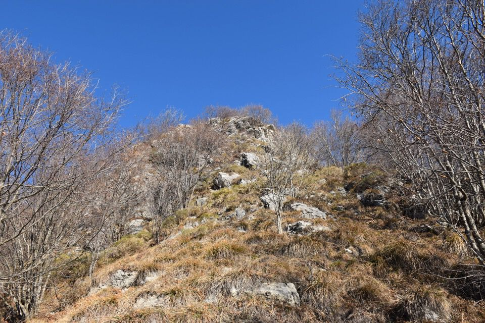

Piú che pic di mai per noi è il pic dal prin da l'an.
Il primo dell'anno ci riserva una bellissima giornata di sole sopra un mare di nubi: già vediamo lo spigolo, piuttosto impressionante a guardarlo da qui.
Il celebre «passaggio chiave», piú delicato che difficile, per via delle zolle sub-verticali in uscita.
Anche dopo comunque non si scherza.
Deneâl e Cjampón sopra il mare di nubi.
Nonostante la quota bassa il panorama dal Cuâr è eccezionale: qui la catena dei Clap, che osservo bene, memore della bellissima salita al Creton di Clap Piccolo.

Gli immancabili grifoni.
Torniamo in val Tochèl per il sentiero dismesso, che è ancora in buone condizioni eccetto nella parte alta (nei prati).

Tornati in Mont di Prât di colpo ci appare, come in un miraggio, il nostro monte.
Grazie Luciana e grazie Kelen: un bel ricordo.